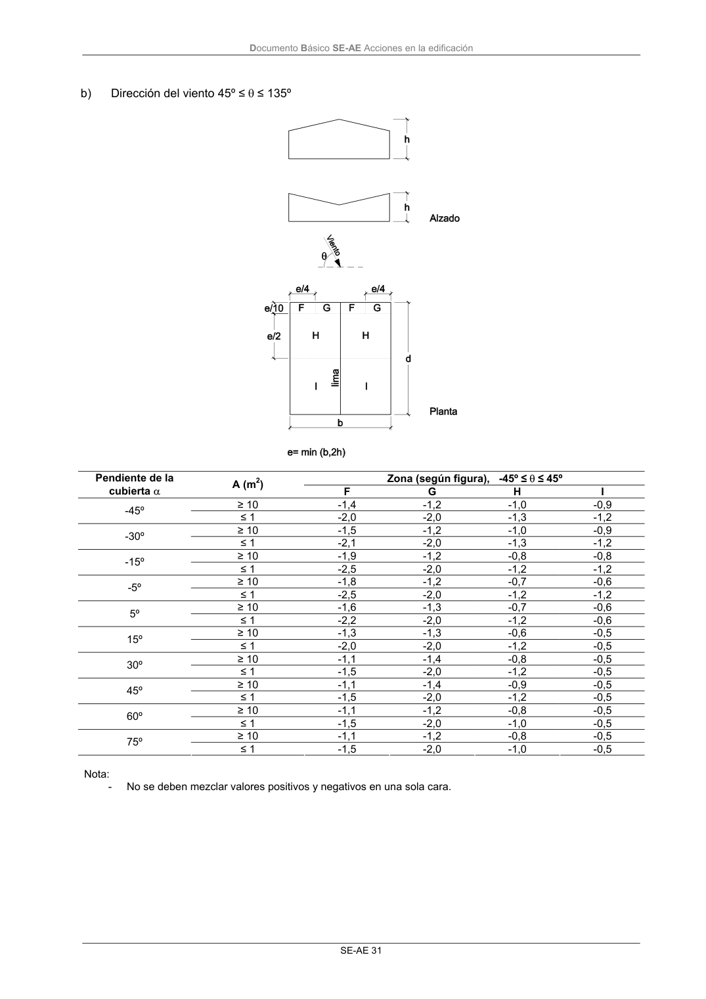

DB-SE-AE Acciones en la edificación · edición 2009-04 · capa oficial
Documento DB-SE-AE-oficial · SHA-256 del PDF 26116e5088955f0c6963a6187270cad282e1e7bf5a53a90f695c8fa50b4e4487
Página física 35 de 46.
Copia fiel del PDF fuente · Fuente oficial
Ficha de la disposición en la fuente oficial
Formato: Texto de la página (Markdown)
Documento Básico SE-AE Acciones en la edificación SE-AE 31 b) Dirección del viento 45º ≤ θ ≤ 135º Zona (según figura), -45º ≤ θ ≤ 45º Pendiente de la cubierta α A (m2) F G H I ≥ 10 -1,4 -1,2 -1,0 -0,9 -45º ≤ 1 -2,0 -2,0 -1,3 -1,2 ≥ 10 -1,5 -1,2 -1,0 -0,9 -30º ≤ 1 -2,1 -2,0 -1,3 -1,2 ≥ 10 -1,9 -1,2 -0,8 -0,8 -15º ≤ 1 -2,5 -2,0 -1,2 -1,2 ≥ 10 -1,8 -1,2 -0,7 -0,6 -5º ≤ 1 -2,5 -2,0 -1,2 -1,2 ≥ 10 -1,6 -1,3 -0,7 -0,6 5º ≤ 1 -2,2 -2,0 -1,2 -0,6 ≥ 10 -1,3 -1,3 -0,6 -0,5 15º ≤ 1 -2,0 -2,0 -1,2 -0,5 ≥ 10 -1,1 -1,4 -0,8 -0,5 30º ≤ 1 -1,5 -2,0 -1,2 -0,5 ≥ 10 -1,1 -1,4 -0,9 -0,5 45º ≤ 1 -1,5 -2,0 -1,2 -0,5 ≥ 10 -1,1 -1,2 -0,8 -0,5 60º ≤ 1 -1,5 -2,0 -1,0 -0,5 ≥ 10 -1,1 -1,2 -0,8 -0,5 75º ≤ 1 -1,5 -2,0 -1,0 -0,5 Nota: - No se deben mezclar valores positivos y negativos en una sola cara.
